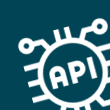

APIs used
A full reference of the Salesforce APIs and OAuth scopes Nektar requires — useful for security reviews, IT approval workflows, and compliance documentation.

OAuth scopes
📝 [CONTENT PLACEHOLDER] — Replace this with actual content for "OAuth scopes".
REST API usage
📝 [CONTENT PLACEHOLDER] — Replace this with actual content for "REST API usage".
Bulk API usage
📝 [CONTENT PLACEHOLDER] — Replace this with actual content for "Bulk API usage".
Note
Nektar uses Salesforce API calls within your org's daily API limit. For large orgs with high API consumption, contact your Nektar CSM to review your usage profile.
Metadata API usage
📝 [CONTENT PLACEHOLDER] — Replace this with actual content for "Metadata API usage".
API limit considerations
📝 [CONTENT PLACEHOLDER] — Replace this with actual content for "API limit considerations".